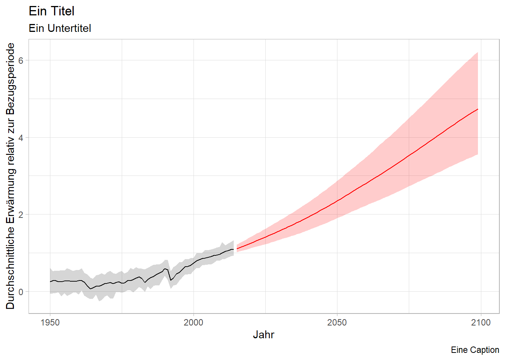

Agenda 24.10.
- Input zur Datenbeschaffung und -auswertung
## ── Attaching core tidyverse packages ──────────────────────── tidyverse 2.0.0 ──
## ✔ dplyr 1.1.3 ✔ readr 2.1.4
## ✔ forcats 1.0.0 ✔ stringr 1.5.0
## ✔ ggplot2 3.4.4 ✔ tibble 3.2.1
## ✔ lubridate 1.9.3 ✔ tidyr 1.3.0
## ✔ purrr 1.0.2
## ── Conflicts ────────────────────────────────────────── tidyverse_conflicts() ──
## ✖ dplyr::filter() masks stats::filter()
## ✖ dplyr::lag() masks stats::lag()
## ℹ Use the conflicted package (<http://conflicted.r-lib.org/>) to force all conflicts to become errors## Year X5. Mean X95.
## 1 1950 -0.0600300 0.252242 0.608546
## 2 1951 -0.0556856 0.274715 0.525308
## 3 1952 -0.0428913 0.274303 0.540725
## 4 1953 -0.0205299 0.253376 0.535419
## 5 1954 -0.1276570 0.246369 0.553914
## 6 1955 -0.0454359 0.273183 0.541897## Year X5. Mean X95.
## 1 2015 1.020885 1.110088 1.214465
## 2 2016 1.040535 1.136830 1.251050
## 3 2017 1.060933 1.166139 1.289023
## 4 2018 1.079272 1.195275 1.329559
## 5 2019 1.099179 1.223858 1.373857
## 6 2020 1.120567 1.253727 1.415060ggplot(data=df1, aes(Year, Mean))+
geom_line()+
geom_ribbon(aes(ymin=X5., ymax=X95.), alpha=.2)+
geom_line(data=df2, color="red")+
geom_ribbon(data=df2, aes(ymin=X5., ymax=X95.), fill="red", alpha=.2)+
theme_light()+
labs(title="Ein Titel",
subtitle="Ein Untertitel",
x="Jahr",
y="Durchschnittliche Erwärmung relativ zur Bezugsperiode",
caption="Eine Caption")
Überlegen Sie in Gruppen, wie sie ihr Thema angehen wollen
Sammeln Sie, wo Sie Informationen des IPCC zu diesem Thema finden
Sprechen Sie mit mir über Ihre Vorhaben und Ihre Fundstellen